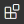

In VS Code, click the  Extensions Icon in the left column toolbar.
In the search bar that appears, type Live Server.
Select the Live Server extension. it should be the top choice.
In the page for Live Server that appears, click the green install button.
Usage Instructions
Visual Studio Code must be open to a folder to use live server.
In VS Code's Explorer, right click (Windows) or Control + clikc (macOS) on an HTML file. From the context menu that appears, select Open with Live Server.